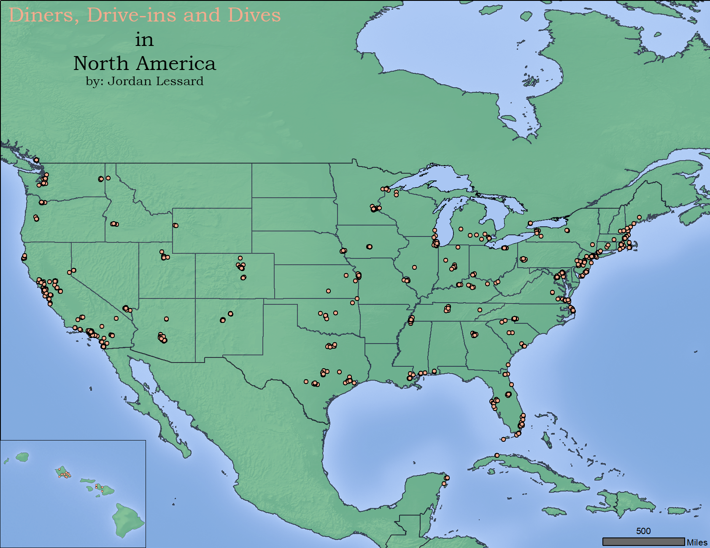
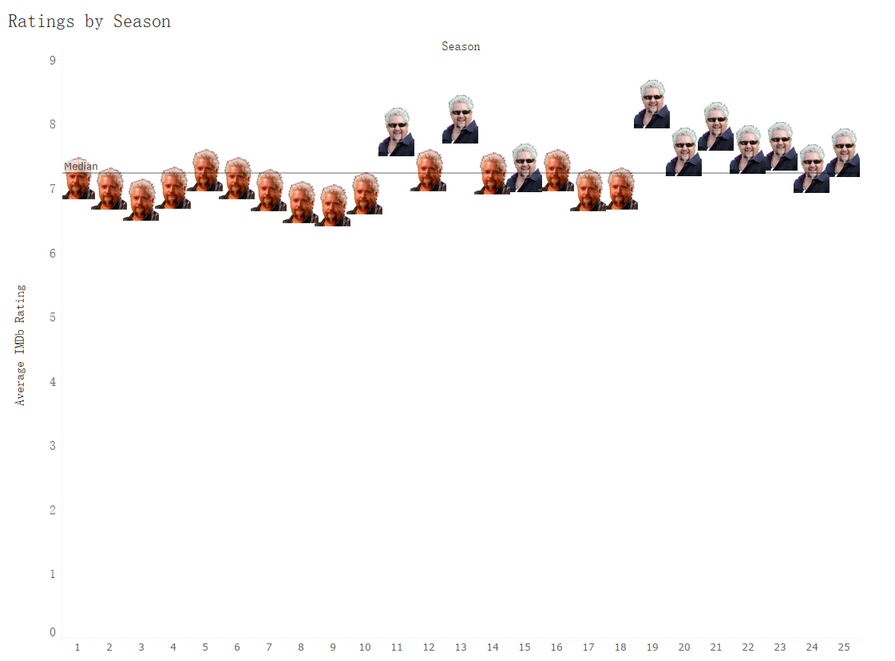
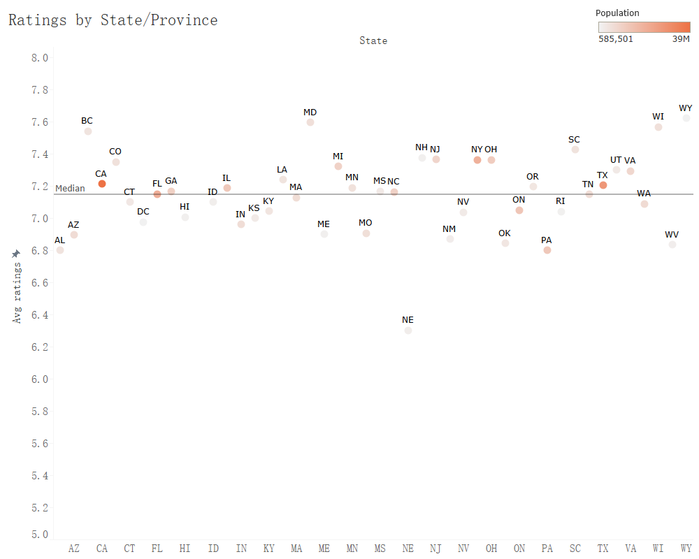

Triple-D, by the Ratings

(Click image for larger view)
I wanted a project that was a little outside of my comfort zone, with data that not only has a geographic component but also television ratings of some sort. In hindsight, these two criteria seem at once horribly vague and weirdly specific, but such is the nature of early morning sparks of inspiration. As time went on, the requirements continued to evolve and morph until only one feasible subject emerged: Guy Fieri and his seemingly never-ending voyages to Flavortown. More specifically, his 26+ season journey through the Diners, Drive-ins and Dives of the world.

I wanted to get an overview of the show and its ratings as a whole. To that I gathered the available the IMDb ratings and averaged them per season. The resulting graph shows a clear trend of increased ratings (denoted by the happy Guy face) above the mean. This trend may not be entirely genuine, however. As following graphs will show, the number of episodes that receive no rating at all has increased over the course of the show, skewing the data somewhat.
With an understanding of the general trajectory of the shows IMDb ratings, I wanted to look at it in a little more detail. The above graph plots each individual episode along with its air date and rating. Indeed, this more granular level further confirms the general trendline. However, this also shows the number and concentration of the null IMDb ratings (shown as zeroes, for sake of convenience). Seasons 1-4 had ratings for every episode, while the latter seasons often have 50% null values; Seasons 27 and 28 have zero ratings. Whether or not this trend reflects waning interest in the show, the IMDb platform, or a shifting in demographics who watch Diners, Drive-ins and Dives is unclear.

(Note: The y-axis has been broken in order to show variation in the data)
Finally, I wanted to look at which states had the highest ratings and whether or not population has any impact on that rating. Using the ratings of episodes in California, Texas, and New York with those from Wyoming, Wisconsin, and Maryland as a basis, we can see that there may indeed be a connection: states with low populations tend to be outliers.